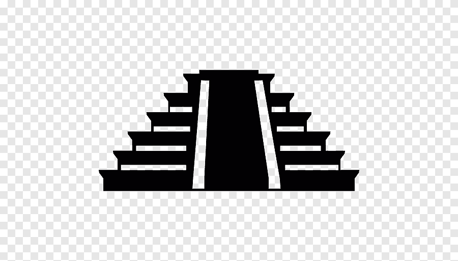

Maravillas del mundo moderno

Maravillas del mundo moderno
Petra
Petra (en griego antiguo, Πέτρα, en árabe, البتراء, al-Batrā') es un
importante enclave arqueológico en Jordania y la capital del antiguo
reino nabateo, cuyos pobladores la llamaban Raqmu (en árabe nabateo:
الرقيم). El nombre de Petra proviene del griego πέτρα, que significa
piedra.
El asentamiento de Petra se localiza en un valle angosto, al este del
valle de Arabá que se extiende desde el mar Muerto hasta el Golfo de
Aqaba. Los restos más célebres de Petra son sin duda sus construcciones
labradas en la misma roca del valle (hemispeos), en particular, los
edificios conocidos como el Khazneh (‘el Tesoro’) y el Deir (‘el
Monasterio’).
Fundada a finales del siglo viii a. C. por los edomitas, fue ocupada en
el siglo VI a. C. por los nabateos que la hicieron prosperar gracias a
su situación en la ruta de las caravanas que llevaban el incienso, las
especias y otros productos de lujo entre Egipto, Siria, Arabia y el sur
del Mediterráneo.
Hacia el siglo VI d. C., el cambio de las rutas comerciales y los
terremotos sufridos condujeron al abandono de la ciudad por sus
habitantes. Cayó en el olvido hasta que en 1812 el lugar fue
redescubierto para el mundo occidental por el explorador suizo Jean
Louis Burckhardt (1784-1817).
Petra se encuentra a mitad de camino entre el golfo de Aqaba y el mar
Muerto a una altitud de 800 a 1396 m s. n. m. (metros sobre el nivel del
mar) en un valle de la región montañosa de Edom, al este del valle de
Arabá. Hoy, Petra está alrededor de 200 km (kilómetros) al suroeste de
la capital jordana Amán, aproximadamente a 3 horas en automóvil.
La situación de Petra, construida en gran parte en la misma roca, como
si de una escultura se tratase, está por eso mismo embutida entre rocas
abruptas y empinadas, entre los pasadizos o pequeños cañones excavados
por la erosión del agua a través de miles de años. Dispone de un
suministro seguro de agua, lo que hace que sea un lugar propicio para el
desarrollo de una próspera ciudad. El lugar es accesible solo por un
estrecho sendero de montaña por el noroeste, o al este a través de un
cañón de aproximadamente 1,5 km de longitud y hasta 200 m (metros) de
altura, el Siq, el acceso principal, que en su lugar más estrecho mide
apenas dos metros de ancho.
La presencia de agua y la seguridad proporcionada por el emplazamiento
de Petra hizo de ella una parada natural en la intersección de varias
rutas de caravanas que conectaban Egipto, Siria y Arabia con el sur del
mar Mediterráneo, cargadas sobre todo con productos de lujo (especias y
seda de la India, de marfil de África, perlas del Mar Rojo e incienso
del sur de Arabia). La resina de árbol del incienso (Boswellia) era
codiciada en todo el mundo antiguo como una ofrenda religiosa
especialmente valiosa, y también como medicamento.
La actividad comercial generada por las caravanas y las tasas percibidas
producían importantes beneficios para los nabateos. Como resultado, la
ciudad albergó desde el siglo V a. C. un importante mercado hasta el
siglo III.
Numerosos edificios, cuyas fachadas están directamente esculpidas en la
roca, forman un conjunto monumental único que, a partir del 6 de
diciembre de 1985, está inscrito en la Lista del Patrimonio Mundial de
la Unesco. La zona que rodea el lugar es también, desde 1993, parque
nacional arqueológico.
Desde el 7 de julio de 2007, Petra forma parte de las nuevas siete
maravillas del mundo moderno.